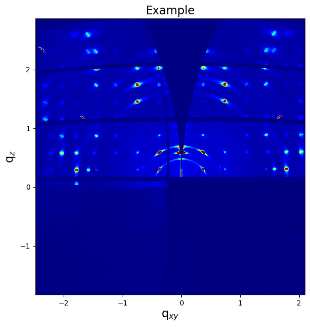
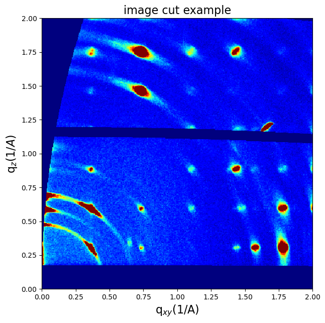
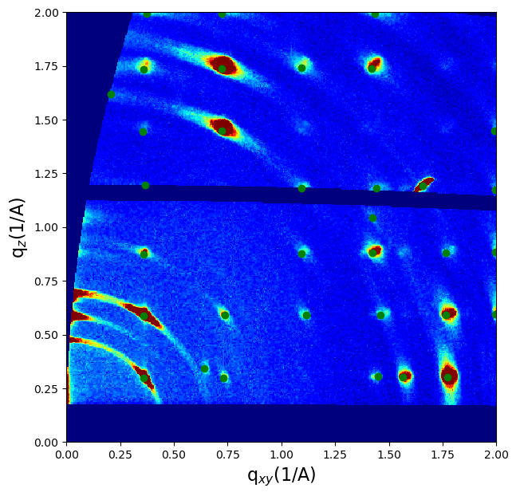
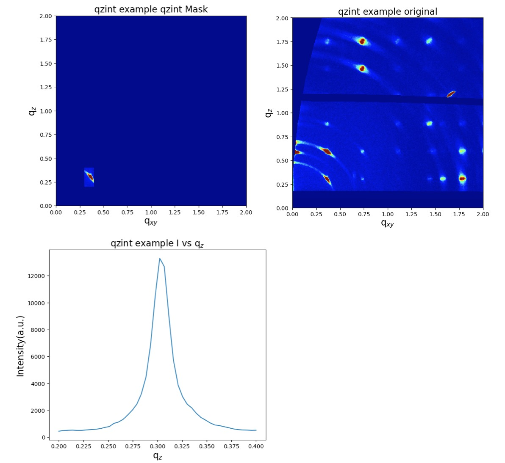
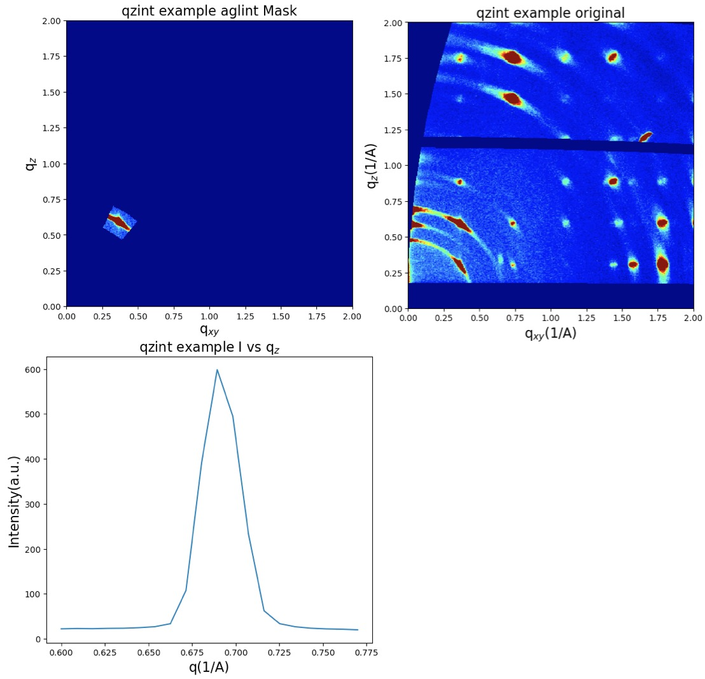

GIWAXS image tool in Python¶
Zihan Zhang (zihan.zhang-1@colorado.edu)
This is an example of the GIWAXS class in python.
Import libraries, the GIWAXS class is included in GIWAXS.py.
import numpy as np
import pandas as pd
import math
import matplotlib.pyplot as plt
import matplotlib.cm as cm
import scipy.io
from scipy.optimize import curve_fit
import GIWAXS
import scipy.misc
import os
from PIL import Image
import tifffile
Load experiment data (.tiff file) with the coordinate. And create a GIWAXS object by M=GIWAXS.GIWAXS(...).
# read .tiff file
dirr = ""
filename = "test_qmap"
path=os.path.join(dirr,filename)
f = tifffile.imread(path+'.tiff')
Giwaxs_data=np.array(f)
qzmax=np.max(np.loadtxt('test_qz.txt'))/10
qzmin=np.min(np.loadtxt('test_qz.txt'))/10
qxymax=np.max(np.loadtxt('test_qxy.txt'))/10
qxymin=np.min(np.loadtxt('test_qxy.txt'))/10
qz=[qzmin,qzmax]
qxy=[qxymin,qxymax]
M=GIWAXS.GIWAXS(Giwaxs_data,qxy,qz,'Example',dirr)
M.switch_qxy()
M.switch_qz()
M.imshow()
print('qz=',qz)
print('qxy=',qxy)
qz= -1.8346400457410241 2.8658707336457097
qxy= -2.4817527502473498 2.10232264951378 
Then you can use cut() function to resize your GIWAXS image.
M.cut([0,2],[0,2])
M.rename('image cut example')
M.cut_imshow()

peak_finder() can help you find the peaks in the cut image. Tune neighborhood_size and threshold to improve the performance. You can also print (q\(_{xy}\), q\(_z\)) and q by setting print_peak_position to True
neighborhood_size=30
threshold=30
print_peak_position=True
colorbar=0.1
M.cut_imshow()
M.peak_finder(neighborhood_size,threshold,print_peak_position)

Qzint() integrate the selected area and gives the intensity vs q\(_z\). Qxyint() gives intensity vs q\(_{xy}\).
qxy1=[0.3,0.4]
qz1=[0.2,0.4]
M.rename('qzint example')
M.qzint(qxy1,qz1)
M.qzint_imshow()

aglint() integrate the selected sector to get intensity vs q. qp defines the number of points in \(q\). A smooth option is also offered to convolute the curve.
angle=[-40,-25]
qrange=[0.6,0.77]
smooth1=False
qp=20
M.aglint(angle,qrange,qp,smooth=smooth1,Nsmooth=10)
q0,I0=M.aglint_imshow()
